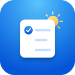

My Daily Things
My Daily Things es una app personal para Windows (y pronto Android). Pegás o escribís un texto y la app lo convierte en tareas con fecha, hora, prioridad, tags y categoría. Funciona en español y en inglés.
- Vistas Día, Semana y Mes, buscador y estadísticas.
- Recordatorios con notificaciones de Windows.
- Estados propios, historial de cada tarea y una herramienta de línea de comandos (
mdt). - Sincronización opcional entre tus equipos con tu propia cuenta de Google Drive.
Tus tareas se guardan en tu equipo. Si activás la sincronización, también se guardan en una carpeta privada de la app dentro de tu Google Drive. No hay ningún servidor propio.
Política de privacidad · Contacto: milanicristian94@gmail.com
English
My Daily Things is a personal app for Windows (Android coming). Paste or type some text and the app turns it into tasks with date, time, priority, tags and category. It understands Spanish and English.
Your tasks are stored on your computer. If you turn on sync, they are also stored in the app's private folder in your Google Drive. There is no server of ours.
Privacy policy · Contact: milanicristian94@gmail.com